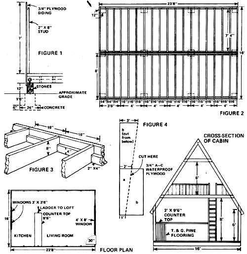

LESTER E. HARRIS JR.
UPPER PHOTO : The Harris family A-frame sheds snow well and is said to be comfortable in zero-degree weather, despite lack of insulation. Heat is provided by a single wood-burning stove. LOWER PHOTOS: Unlike other A-frames, the Harris's lodge features ample stand-up, walk-around mom inside and-thanks to the loftsleeps five comfortably. Twin collar beams near roof's apex add strength to building, provide point from which to suspend lighting fixture (not visible).